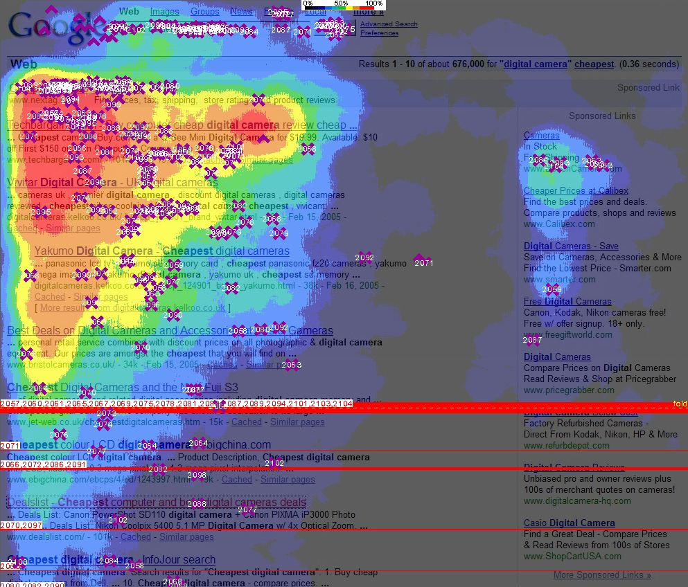

DIN¶
Note
DIN引入了注意力机制。
结构¶
“注意力机制”来源于人类天生的“选择性注意”的习惯，如浏览网页时，我们会选择性的注意页面的特定区域，而忽视其他区域：

对于推荐系统来说，“注意力机制”也很有用。
比如说一个用户访问某电商网站，我们决定是否要推“键盘”，用户的购买历史有“鼠标””T恤“”洗面奶“等，这时相比于关注”T恤“”洗面奶“的购买行为，我们应更加关注的是用户购买历史中的“鼠标”购买行为，因为“鼠标”和“键盘”的购买更“相关”。
因此阿里提出了DIN模型，它的base-model是一个典型的embedding + mlp结构。

base-model中，所有用户历史购买的商品Embedding会被取平均。
DIN则以候选商品和历史商品的相关性为权重，取所有用户历史购买的商品Embedding的加权平均：

数据预处理¶
import tensorflow as tf
from tensorflow import keras
import rec
# 读取movielens数据集
train_dataset, test_dataset = rec.load_movielens()
inputs = {
'movieAvgRating': tf.keras.layers.Input(name='movieAvgRating', shape=(), dtype='float32'),
'movieRatingStddev': tf.keras.layers.Input(name='movieRatingStddev', shape=(), dtype='float32'),
'movieRatingCount': tf.keras.layers.Input(name='movieRatingCount', shape=(), dtype='int32'),
'userAvgRating': tf.keras.layers.Input(name='userAvgRating', shape=(), dtype='float32'),
'userRatingStddev': tf.keras.layers.Input(name='userRatingStddev', shape=(), dtype='float32'),
'userRatingCount': tf.keras.layers.Input(name='userRatingCount', shape=(), dtype='int32'),
'releaseYear': tf.keras.layers.Input(name='releaseYear', shape=(), dtype='int32'),
'movieId': tf.keras.layers.Input(name='movieId', shape=(), dtype='int32'),
'userId': tf.keras.layers.Input(name='userId', shape=(), dtype='int32'),
'userRatedMovie1': tf.keras.layers.Input(name='userRatedMovie1', shape=(), dtype='int32'),
'userRatedMovie2': tf.keras.layers.Input(name='userRatedMovie2', shape=(), dtype='int32'),
'userRatedMovie3': tf.keras.layers.Input(name='userRatedMovie3', shape=(), dtype='int32'),
'userRatedMovie4': tf.keras.layers.Input(name='userRatedMovie4', shape=(), dtype='int32'),
'userRatedMovie5': tf.keras.layers.Input(name='userRatedMovie5', shape=(), dtype='int32'),
'userGenre1': tf.keras.layers.Input(name='userGenre1', shape=(), dtype='string'),
'userGenre2': tf.keras.layers.Input(name='userGenre2', shape=(), dtype='string'),
'userGenre3': tf.keras.layers.Input(name='userGenre3', shape=(), dtype='string'),
'userGenre4': tf.keras.layers.Input(name='userGenre4', shape=(), dtype='string'),
'userGenre5': tf.keras.layers.Input(name='userGenre5', shape=(), dtype='string'),
'movieGenre1': tf.keras.layers.Input(name='movieGenre1', shape=(), dtype='string'),
'movieGenre2': tf.keras.layers.Input(name='movieGenre2', shape=(), dtype='string'),
'movieGenre3': tf.keras.layers.Input(name='movieGenre3', shape=(), dtype='string'),
}
定义特征¶
# movie id embedding feature
movie_col = tf.feature_column.categorical_column_with_identity(key='movieId', num_buckets=1001)
movie_emb_col = tf.feature_column.embedding_column(movie_col, 10)
# user id embedding feature
user_col = tf.feature_column.categorical_column_with_identity(key='userId', num_buckets=30001)
user_emb_col = tf.feature_column.embedding_column(user_col, 10)
# 电影的类别
genre_vocab = ['Film-Noir', 'Action', 'Adventure', 'Horror', 'Romance', 'War',
'Comedy', 'Western', 'Documentary', 'Sci-Fi', 'Drama', 'Thriller',
'Crime', 'Fantasy', 'Animation', 'IMAX', 'Mystery', 'Children', 'Musical']
# user genre embedding feature
user_genre_col = tf.feature_column.categorical_column_with_vocabulary_list(key="userGenre1",
vocabulary_list=genre_vocab)
user_genre_emb_col = tf.feature_column.embedding_column(user_genre_col, 10)
# item genre embedding feature
item_genre_col = tf.feature_column.categorical_column_with_vocabulary_list(key="movieGenre1",
vocabulary_list=genre_vocab)
item_genre_emb_col = tf.feature_column.embedding_column(item_genre_col, 10)
# 用户画像
user_profile = [
user_emb_col,
user_genre_emb_col,
tf.feature_column.numeric_column('userRatingCount'),
tf.feature_column.numeric_column('userAvgRating'),
tf.feature_column.numeric_column('userRatingStddev'),
]
# 环境特征
context_features = [
item_genre_emb_col,
tf.feature_column.numeric_column('releaseYear'),
tf.feature_column.numeric_column('movieRatingCount'),
tf.feature_column.numeric_column('movieAvgRating'),
tf.feature_column.numeric_column('movieRatingStddev'),
]
# 用户历史行为
recent_rate_col = [
tf.feature_column.numeric_column(key='userRatedMovie1', default_value=0),
tf.feature_column.numeric_column(key='userRatedMovie2', default_value=0),
tf.feature_column.numeric_column(key='userRatedMovie3', default_value=0),
tf.feature_column.numeric_column(key='userRatedMovie4', default_value=0),
tf.feature_column.numeric_column(key='userRatedMovie5', default_value=0),
]
模型¶
"""
四大部分
"""
# 用户画像
user_profile_layer = tf.keras.layers.DenseFeatures(user_profile)(inputs)
# 物品画像
candidate_emb_layer = tf.keras.layers.DenseFeatures([movie_emb_col])(inputs)
# 环境
context_features_layer = tf.keras.layers.DenseFeatures(context_features)(inputs)
# 用户历史行为，这个需要被注意力
user_behaviors_layer = tf.keras.layers.DenseFeatures(recent_rate_col)(inputs)
"""
注意力第一步
"""
# 用户行为转化为embedding，共5个用户行为
# mask_zero: 0当做padding
user_behaviors_emb_layer = tf.keras.layers.Embedding(input_dim=1001,
output_dim=10,
mask_zero=True)(user_behaviors_layer)
# 5次复制candidate_embedding
repeated_candidate_emb_layer = tf.keras.layers.RepeatVector(5)(candidate_emb_layer)
# element-wise sub
activation_sub_layer = tf.keras.layers.Subtract()([user_behaviors_emb_layer,
repeated_candidate_emb_layer])
# element-wise product
activation_product_layer = tf.keras.layers.Multiply()([user_behaviors_emb_layer,
repeated_candidate_emb_layer])
# 相减，自身，相乘concat起来
activation_all = tf.keras.layers.concatenate([activation_sub_layer,
user_behaviors_emb_layer,
repeated_candidate_emb_layer,
activation_product_layer], axis=-1)
"""
注意力第二步
"""
# 获得activation
activation_unit = tf.keras.layers.Dense(32)(activation_all)
# PReLU: 小于0的斜率为参数
activation_unit = tf.keras.layers.PReLU()(activation_unit)
activation_unit = tf.keras.layers.Dense(1, activation='sigmoid')(activation_unit)
# 将activation（先需reshape）与user_behaviors_emb相乘
activation_unit = tf.keras.layers.Flatten()(activation_unit)
activation_unit = tf.keras.layers.RepeatVector(10)(activation_unit)
activation_unit = tf.keras.layers.Permute((2, 1))(activation_unit)
activation_unit = tf.keras.layers.Multiply()([user_behaviors_emb_layer, activation_unit])
# sum pooling
user_behaviors_pooled_layers = tf.keras.layers.Lambda(
lambda x: tf.keras.backend.sum(x, axis=1))(activation_unit)
"""
fc layer
"""
concat_layer = tf.keras.layers.concatenate([user_profile_layer, user_behaviors_pooled_layers,
candidate_emb_layer, context_features_layer])
output_layer = tf.keras.layers.Dense(128)(concat_layer)
output_layer = tf.keras.layers.PReLU()(output_layer)
output_layer = tf.keras.layers.Dense(64)(output_layer)
output_layer = tf.keras.layers.PReLU()(output_layer)
output_layer = tf.keras.layers.Dense(1, activation='sigmoid')(output_layer)
# 定义模型
model = tf.keras.Model(inputs, output_layer)
训练¶
# compile the model, set loss function, optimizer and evaluation metrics
model.compile(
loss='binary_crossentropy',
optimizer='adam',
metrics=['accuracy', tf.keras.metrics.AUC(curve='ROC'), tf.keras.metrics.AUC(curve='PR')])
# train the model
model.fit(train_dataset, epochs=5)
Epoch 1/5
/Users/facer/opt/anaconda3/lib/python3.8/site-packages/keras/engine/functional.py:582: UserWarning: Input dict contained keys ['rating', 'timestamp', 'userAvgReleaseYear', 'userReleaseYearStddev'] which did not match any model input. They will be ignored by the model.
warnings.warn(
7403/7403 [==============================] - 23s 3ms/step - loss: 2.6686 - accuracy: 0.5811 - auc: 0.5930 - auc_1: 0.6399
Epoch 2/5
7403/7403 [==============================] - 19s 3ms/step - loss: 0.6658 - accuracy: 0.6666 - auc: 0.7079 - auc_1: 0.7311
Epoch 3/5
7403/7403 [==============================] - 19s 3ms/step - loss: 0.5635 - accuracy: 0.7131 - auc: 0.7748 - auc_1: 0.7956
Epoch 4/5
7403/7403 [==============================] - 19s 3ms/step - loss: 0.5174 - accuracy: 0.7446 - auc: 0.8170 - auc_1: 0.8385
Epoch 5/5
7403/7403 [==============================] - 20s 3ms/step - loss: 0.4922 - accuracy: 0.7606 - auc: 0.8372 - auc_1: 0.8598
<keras.callbacks.History at 0x7ff7cd425fd0>